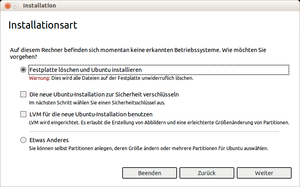
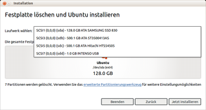
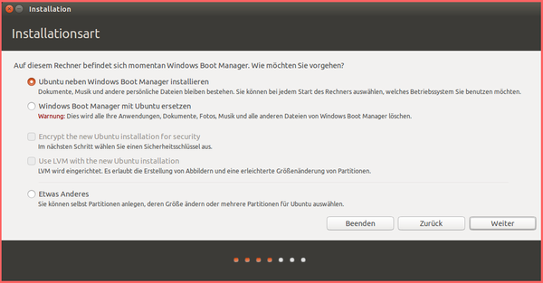
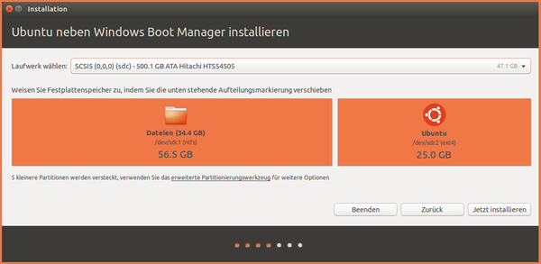
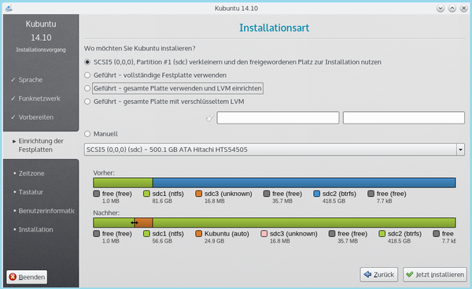
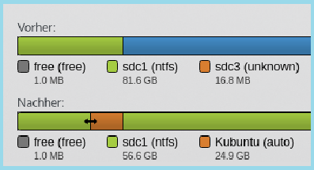
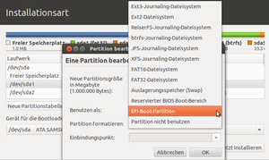
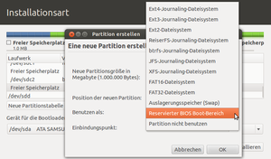

EFI Installieren
Dieser Artikel wurde für die folgenden Ubuntu-Versionen getestet:
Ubuntu 16.04 Xenial Xerus
Ubuntu 14.04 Trusty Tahr
Zum Verständnis dieses Artikels sind folgende Seiten hilfreich:
Grundsätzlich ist die Installation [3] von Ubuntu auf einem System mit einem UEFI nicht schwieriger, als auf einem System mit einem BIOS. D.h. besondere manuelle Eingriffe sind in der Regel vor oder während der Installation [3] nicht notwendig, sofern das EFI seitens des System- oder Mainboard-Herstellers sauber implementiert wurde.
Voraussetzung ist allerdings, dass man den Boot-Mechanismus - der gegenüber einem BIOS-System komplexer ist - kennt und damit umzugehen weiß. Daher muss man dem Startvorgang der Ubuntu-CD oder des Ubuntu-USB-Sticks besondere Aufmerksamkeit schenken, um etwaigen Fallstricken die sich daraus ergeben können von vornherein aus dem Weg zu gehen.
In diesem Artikel wird auf Besonderheiten und Probleme eingegangen, die den Start des Ubuntu-Startmediums, die Installation von Ubuntu im EFI-Modus sowie den ersten Start nach erfolgter Installation betreffen.
Vorbereitung der Installation¶
Hat der Rechner kein DVD/CD-Laufwerk, so kann in der Regel von einem bootfähigen USB-Stick gebootet werden. Die Einstellungen und Funktionstasten zur Benutzung eines USB-Sticks sind den Beschreibungen zur Hardware zu entnehmen.
Zur Erstellung eines bootfähigen USB-Stick für die ausschließliche Nutzung auf UEFI Rechnern siehe Erstellung USB-Stick. Es ist immer eine ISO-Datei mit einer 64Bit-Architektur (-amd64.iso) zu benutzen.
Experten-Info:
Hat man sich entschieden, ein EFI Bootmanagement einzurichten bzw. für Ubuntu beizubehalten, so sind folgende Vorbereitungen / Überprüfungen auszuführen:
unter Windows 8 bis 10
bei vergessenen Passwort: im Anmeldebildschirm unten rechts auf des Ein-/Aussymbol klicken. In dem sich öffnenden Menü mit gedrückter Umschalttaste auf "Neustart" klicken.
unter Windows 7
Eingabeaufforderung -> "Als Administrator ausführen"
powercfg /h off eingegeben
Für alle Windows Versionen gilt
Partitionierung darf kein Dynamic Disc Management sein (externer Link)
im EFI-BIOS
fast-boot -> auf [ "Disabled" ] setzen
Information vor der Installation¶
Um Ubuntu auf einem System mit UEFI-BIOS im EFI-Modus installieren zu können, muss man das Ubuntu-Installations-Medium unbedingt im EFI-Modus durch entsprechende Auswahl im EFI-Menü starten. Ist im EFI-BIOS auch die Option
secure-boot
aktiviert, so wird die Installation unter Ubuntu in der Regel auch gleich mit signiertem Kernel ausgeführt. Nach der Auswahl im EFI-Menü und Start des Ubuntu-Installations-Medium stellen sich die Fragen:
War der Start des Computers mit dem Installations_Medium erfolgreich?
Befindet man sich am Ubuntu EFI-Live-Desktop?
Notwendige Informationen¶
Für eine Anfrage im Forum, sollte man die nachfolgenden Abfragen im Terminal durchführen - zumindest helfen diese dem Verständnis und der Übersicht über den Rechner / der Datenträger. Alle Ausgaben, einschließlich möglicher Fehlerausgaben, sollte man bei einer Anfrage gleich mit kopieren!
Für eine Überprüfung öffnet man ein Terminal [1] mit der Tastenkombination
Strg + Alt + T
und erfragt den korrekten Start des Startmedium mit der Eingabe in das Terminal von:
mount | grep efivars
Hierbei sollte eine Ausgabe erfolgen mit folgendem Inhalt:
... /sys/firmware/efi/efivars...
Erfolgt hierbei keine Ausgabe, so ist eine Installation im EFI-Modus nicht möglich.
Auch ohne Internetverbindung installiert man im Terminal das erforderliche Programm nach mit:
sudo apt-get install efibootmgr
Danach kann man die Informationen zum Rechner im Terminal abfragen mit:
sudo dmidecode -t 0 ## Abfrage zum BIOS sudo dmidecode -t 1 ## Abfrage zur Hardware sudo efibootmgr -v
Bei einem Live-System, gestartet im EFI-Modus, wird mit dem letzten Befehl eine Liste der Einträge im NVRAM angezeigt, es muss in dieser Auflistung auch das Installations-Medium sein.
Eine Übersicht aller Datenträger im System erhält man im Terminal [1] mit der Eingabe:
sudo parted -l ## kleines L
NVRAM testen¶
Achtung!
Bei einigen EFI-BIOS darf secure-boot während der Installation nicht aktiviert sein - es werden dann keine Einträge in das NVRAM übernommen!
Um das Verhalten vom NVRAM bei aktivem secure-boot zu überprüfen, kann man versuchen in diesen BIOS-Bereich Veränderungen einzubringen. Man öffnet ein Terminal [1] und gibt dort nacheinander ein:
sudo efibootmgr
Relevant ist jetzt hier die Zeile mit der beispielhaften Ausgabe:
BootCurrent: 0004
Dieses sollte das Installationsmedium anzeigen. Nun testet man das NVRAM an, indem man eingibt:
sudo efibootmgr -n 0004
Das sollte dann die folgenden beispielhaften Zeilen auswerfen:
BootNext: 0004 BootCurrent: 0004
Man kann das EFI-BIOS jetzt austesten, ob es diese Information richtig verarbeitet. Sofern man mit dieser Einstellung das Installationsmedium neu startet / rebootet, sollte dieses nach dem Reboot - ganz ohne Benutzereingriff - automatisch aufgerufen und gestartet werden. Oder man macht das mit dem nächsten Befehl wieder rückgängig:
sudo efibootmgr -N
Installation im EFI-Modus¶
Es wird empfohlen von allen (wichtigen) Daten vorab ein Backup anzulegen - es kann immer etwas schief gehen!
Experten-Info:
Will man sein Ubuntu neben einem bestehenden Betriebssystem als verschlüsseltes System anlegen, so muss man dazu die Beschreibung unter
System verschlüsseln mit Alternate-Installation
Installation in einer LVM
System verschlüsseln/Schlüsselableitung System verschlüsseln mit Desktop-CD/DVD
Installation mit selektiver Verschlüsselung der Partitionen
anwenden.
Die Installation im EFI-Modus läuft grundsätzlich genauso ab, wie herkömmlich vom BIOS-Modus gewohnt. Allerdings gibt es wesentliche Unterschiede bei der Installationsart. Je nach gewählter Installationsart führt die Ubuntu-Installation zu unterschiedlichem Verhalten nach dem Starten des Installers. Siehe auch die Hinweise unter Erstellung Bootloader
Achtung!
Der Ubuntu-Installer ubiquity erkennt bis Trusty Tahr (14.04 LTS) keine andere, bestehende EFI-Installation. Um Ubuntu neben einer bestehenden EFI-Installation einzurichten, muss die Installationsart Etwas Anderes gewählt werden.
Ab Utopic Unicorn (14.10) wird eine andere EFI_Installation erkannt und man kann mit der Installation neben Windows fortfahren.
|  |
| Maske mit Zuordnung von weiteren Parametern |
Festplatte löschen und Ubuntu installieren¶
Erscheint im Installer der rechte Hinweis, so ist eine einzelne Installation (kein Dualboot) unproblematisch. Jede andere Darstellung bedingt eine intensive Untersuchung des Systems und man sollte die Installation abbrechen.
Wählt man die erste Option, so kann man hier gleich weitere Parameter wählen:
"Die neue Ubuntu-Installation zur Sicherheit verschlüsseln"
"LVM für die neue Ubuntu-Installation benutzen"
Mit dem Button "Weiter" wird dann automatisch:
das vorhandene Betriebssystem auf dem Datenträger gelöscht
in jedem Fall eine GPT auf dem Datenträger angelegt
eine Ubuntu-Root-Partition sowie eine Partition für die Auslagerungsdatei (swap) eingerichtet
in jedem Fall eine EFI-System-Partition erstellt
GRUB-EFI auf die EFI-System-Partition installiert
und ein Eintrag im EFI-Boot-Menü hinterlegt
|  |
| Maske zur Auswahl einer Festplatte |
Vorauswahl einer Festplatte¶
Sind mehr als eine Festplatte im Rechner, erscheint als nächste Zwischenabfrage diese Anzeige. Dort kann man dann eine bestimmte Festplatte zur Installation [2] aussuchen.
Wichtig an dieser Stelle ist zu wissen, sofern bereits eine EFI-Partition im Rechner vorhanden ist (in der Regel /dev/sda1), wird immer diese genommen, auch wenn die Installation von Ubuntu auf einer anderen Festplatte - z.B. auf /dev/sdb erfolgt.
Installation neben Windows¶
Diese nachfolgenden Optionen sind für Ubuntu, Ubuntu-GNOME, Lubuntu sowie  Xubuntu erst ab Utopic Unicorn (14.10) vorhanden, noch experimentell und sollte nur mit Bedacht gewählt werden!
Xubuntu erst ab Utopic Unicorn (14.10) vorhanden, noch experimentell und sollte nur mit Bedacht gewählt werden!
Die angebotenen Optionen lassen nur eingeschränkten Zugriff auf die Partitionierung zu - will man mehr Einfluss nehmen, dann sollte man auf die Installationsart Etwas Anderes ausweichen.
Will man eine unbenutzte Festplatte verwenden bzw. ist die Festplatte mit einer MBR versehen, muss man die Partitionstabelle mit einem externen Partitionierungswerkzeug (GParted) bzw. (Partitionmanager) vorab mit einer GPT aufbereiten.
Experten-Info:
Der Installer wählt hierbei aus den gegebenen Festplatten einen Bereich automatisch aus. Dabei wird
vorangig nicht partitionierter Bereich
Aufteilung von belegten Bereichen - siehe Beispiele
für die Installation zugewiesen.
| Installation unter Ubuntu | |
| Erläuterung | Darstellung |
| Vorauswahl: Abfrage nach der Art der Installation |  |
| Festlegung: Durch das Verschieben des Trennbalken kann die Größe der Partition eingestellt werden |  |
Bei Kubuntu bzw. Kubuntu-Plasma5 dagegen hat man keine Vorauswahl und es wird gleich der Vorschlag zur Partitionierung angeboten:
| Installation unter Kubuntu | |
| Erläuterung | Darstellung |
| Vorschlag: Abfrage nach der Art der Installation |  |
| Festlegung: Mit dem Pfeil kann die Größe der Partition eingestellt werden |  |
Nach der Auswahl "Jetzt Installieren" läuft die Installation wie bisher mit den Abfragen zum System bzw. Benutzer ab.
Installationsart Etwas Anderes¶
Wählt man aus obigen Angebot die Installationsart "Etwas Anderes", so gilt folgendes:
|  |
| Vorauswahl EFI Boot Partition |
Erstellt man hier eine neue Partitionstabelle, so wird stets eine GPT angelegt.
Sofern noch keine EFI-Partition vorhanden ist, muss diese unbedingt eingerichtet werden. Diese heißt innerhalb des Installationsprogramms "EFI-Boot-Partition".
Als Gerät für den Bootloader muss man keine Angaben machen, es wird ohnehin die EFI-Partition als Ablage der GRUB 2-Informationen benutzt.
Erforderliche Nacharbeiten zur Optimierung des System werden im Artikel EFI Nachbearbeitung beschrieben.
Erstellung Bootloader¶
Da der Installer keine anderen EFI-Installationen erkennt, muss man die ggf. anderen, vorhandenen Betriebssysteme bis einschließlich Ubuntu 13.04 manuell in das GRUB 2-Menü einbinden, wenn man nicht ausschließlich über das EFI-Menü auswählen will.
Ab Ubuntu 14.04 LTS werden andere Betriebssysteme von GRUB 2 eingeschränkt erkannt und eingeordnet. Diese Einschränkungen sind:
Die EFI-Partition muss korrekt konfiguriert sein
Der Windowseintrag befindet sich auf der EFI-Partition der ersten Festplatte (/dev/sda)
Die weiteren Linux-Installationen befinden sich auf dem gleichen Medium *
Die weiteren Linux-Installationen benutzen die gleiche EFI-Partition *
* Interne oder externe Festplatte wie das aktuelle System
Hinweis:
Man sollte beim ersten Start nach der Installation sich die Einträge im Grub-Menü dahingehend ansehen, ob alle vorhandenen Betriebssysteme auch erfasst wurden.
Installation im BIOS-Modus¶
Man muss die Option secure-boot im EFI-BIOS auf jeden Fall deaktivieren (siehe auch EFI Grundlagen bzw. CSM). Außerdem sollte man im EFI-BIOS die Optionen
Fast Boot
UEFI-Modus
deaktivieren. Dieses hat aber zur Folge, dass diese Einstellungen dann auch für andere Betriebssysteme nicht mehr zur Verfügung stehen!
|  |
| Vorauswahl Reservierter BIOS Boot-Bereich |
Hinweis:
Um Ubuntu auf einem System mit UEFI-BIOS im BIOS-Modus installieren zu können, muss man das Ubuntu-Installations-Medium unbedingt im BIOS-Modus durch entsprechende Auswahl im EFI-Menü bzw. nach Ergänzung der Bootoptionen durch noefi starten.
Der weitere Ablauf im Installer erfolgt danach im Wesentlichen wie unter Ubuntu Installation beschrieben.
Hat man eine GUID-Partitionstabelle (GPT) und will/muss diese beibehalten, so muss man den Punkt Installationsart Etwas Anderes wählen und für die GRUB 2-Dateien noch einen als reservierten BIOS Boot-Bereich) bezeichneten Bereich anlegen (siehe Abbildung).
Links¶
Intern¶
EFI Bootmanagement
 Übersicht zur Artikelserie
Übersicht zur Artikelserie EFI Grundlagen - Alles Wissenwerte rund um Ubuntu mit einem (U)EFI-BIOS]
EFI Deinstallieren - Selektives Entfernen eines Betriebssystemes
EFI Nachbearbeitung - Hinweise und Maßnahmen nach einer Installation
EFI Modus umstellen - Umstellung der Boot-Modi von (U)EFI nach BIOS
efibootmgr - (U)EFI-Menü einstellen und prüfen
EFI USB-Stick - Einen USB-Stick für UEFI aufbereiten
EFI Problembehebung - eine Sammlung von Erfahrungen, Fragen und Abhilfen
Howto/Installation von 32-Bit Ubuntu auf EFI-System - ein 32-bit Ubuntu auf Systemen mit EFI installieren
Dualboot - Installation von Ubuntu neben Windows
System verschlüsseln/Alternate Installation - Verschlüsselte Installation von Ubuntu neben Windows
Laufwerksverwaltung - Eine ISO-Datei auf einen USB-Stick bringen
Extern¶
UEFI Spezifikation
 - Aufbau und Grundsätze
- Aufbau und GrundsätzeUEFI - Unified Extensible Firmware Interface
NVRAM - Non-Volatile Random-Access Memory
Dynamic Disc Management umstellen
- Erstellt mit Inyoka
-
 2004 – 2017 ubuntuusers.de • Einige Rechte vorbehalten
2004 – 2017 ubuntuusers.de • Einige Rechte vorbehalten
Lizenz • Kontakt • Datenschutz • Impressum • Serverstatus -
Serverhousing gespendet von